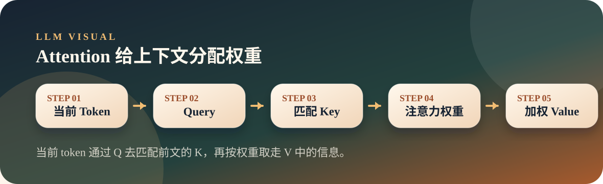

从零开始理解大模型
04. Attention：大模型的“阅读重点”机制
Attention 让每个 token 在生成表示时，按权重查看前面的 token，从而把上下文关系带进当前表示。
AttentionQKVCausal Mask
Thesis
文章主旨
Attention 让每个 token 在生成表示时，按权重查看前面的 token，从而把上下文关系带进当前表示。
一句话里每个词的重要性不同。模型生成最后一个词时，不能平均看前面所有词，而要知道当前最该关注谁。
Visual
图解主线

Attention 像读文章时划重点：当前词带着一个问题去前文找线索，相关的地方权重大，不相关的地方权重小。
Explain
概念展开
这一页先把文章里的关键判断讲顺，再用一个小观察帮助落地。
- Attention 负责在上下文里分配注意力权重。
- 因果语言模型只能看当前位置及之前的 token。
- 多头注意力让模型能同时从多个角度理解一句话。
- Q、K、V 可以理解为：我在找什么、每个词提供什么索引、真正取走什么信息。
- Attention 不是人类意义上的专注，而是一组可计算的权重。
- 因果掩码保证模型不能偷看未来答案。
Small Check
可选小实验
把抽象的 Attention 变成可观察的矩阵和热力图。 实验只用于观察现象，不作为本页主线。
可选实验命令
python3 llm/04-attention/attention.py "The capital of France is" --layer 0- Attention 矩阵会显示每个 token 对前面 token 的关注权重。
- 右上角未来位置不可见，这是因果掩码的效果。
- 最后一个 token 的注意力变化，可以直观看到模型如何汇总前文。
Map
前后关系
这一页不是孤立知识点，它在整条大模型主线里承担一个具体位置。
- 上一页「Embedding」提供了前置概念，这一页把它推进到「Attention」。
- 下一页「Transformer」会沿着这条线继续展开，避免把单个概念孤立记忆。
- 本页只抓一个关键词：Query + Key + Value。现场讲解时先讲文章结论，再用图示解释为什么。
Boundary
易混点
- Attention 权重不是完整解释，只是一个重要观察窗口。
- 某个 head 看起来奇怪很正常，多头合起来才构成整体效果。
- 上下文越长，Attention 的计算成本越高。
Extend
继续阅读
教学页以讲清文章为主；完整原文与配套脚本保留在仓库中，方便分享后继续查阅。